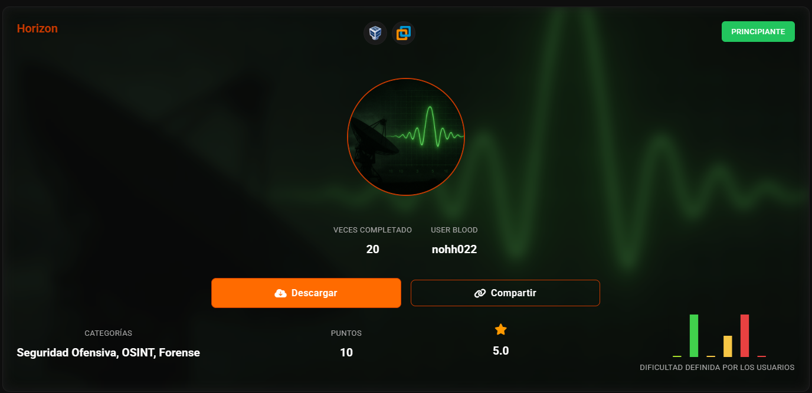
nmap -sn 192.168.56.0/24
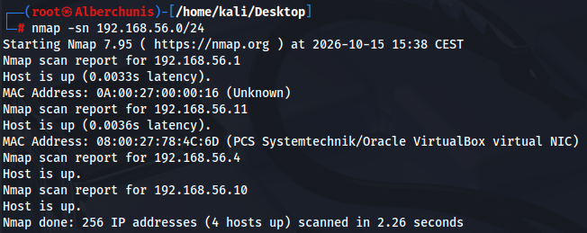
nmap -p- -sV 192.168.56.11
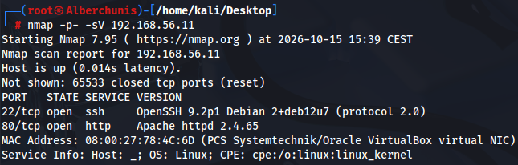
nmap -p80 --script=vuln 192.168.56.11
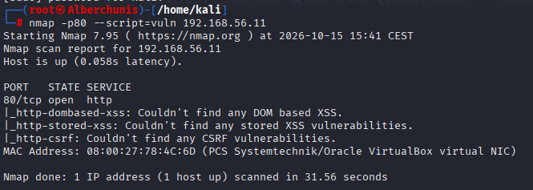
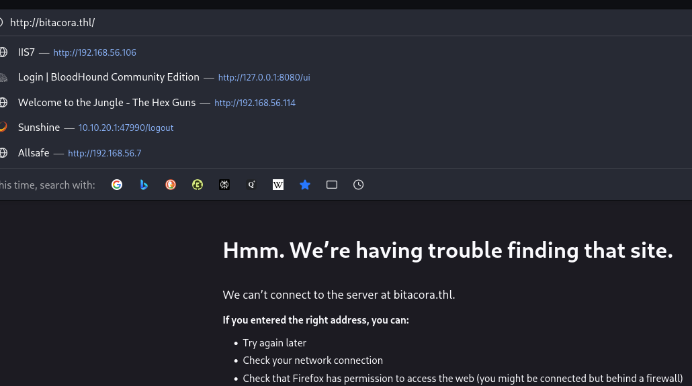
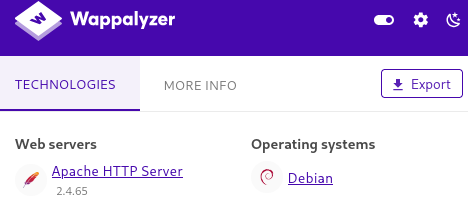
vi /etc/hosts
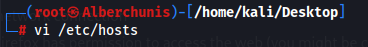
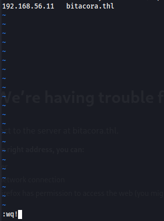
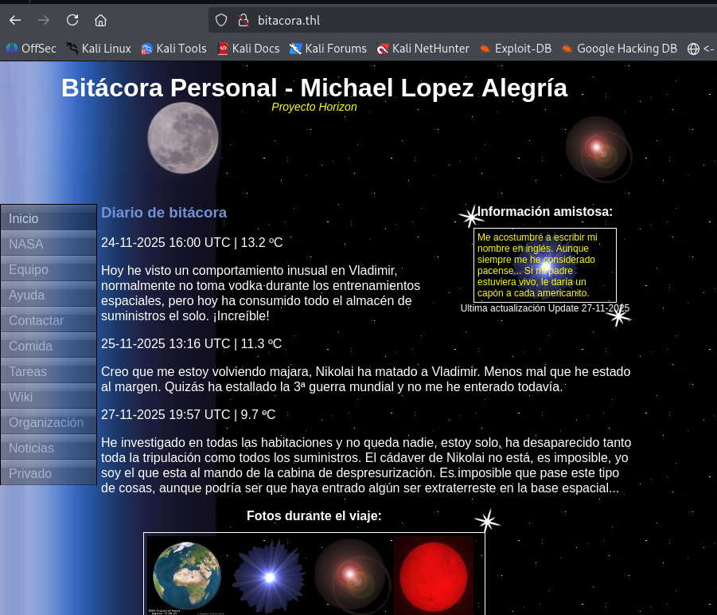
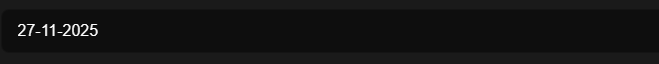
en este caso nos estamos encontrando una proteccion de seguridad contra gobuster, al principio funciona pero despues empieza a poner forbiden incluso en firefox
gobuster dir -u http://bitacora.thl -w /usr/share/wordlists/ffuf/SecLists/Discovery/Web-Content/DirBuster-2007_directory-list-2.3-medium.txt -x php,html,txt,zip -b 400,404,403
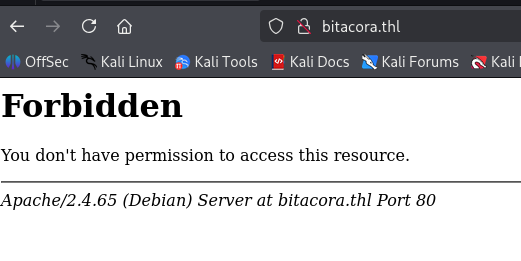
al reiniciar el servidor vuelve a funcionar, vamos a probar limitando los hilos de gobuster
gobuster dir -u http://bitacora.thl -w /usr/share/wordlists/ffuf/SecLists/Discovery/Web-Content/DirBuster-2007_directory-list-2.3-medium.txt -x php,html,txt,zip -b 400,404,403 -t 10
sigue pasando
lo lanzamos mas despacio y con delay, asi ya no se bloquea
gobuster dir -u http://bitacora.thl -w /usr/share/wordlists/ffuf/SecLists/Discovery/Web-Content/raft-medium-directories.txt -x php,html -b 400,404,403 --delay 500ms
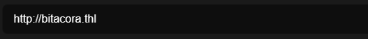
ffuf -u http://bitacora.thl/privado/FUZZ -w /usr/share/wordlists/dirb/common.txt -mc 200,302 -p 0.3
el limite es 300ms para que no bloquee
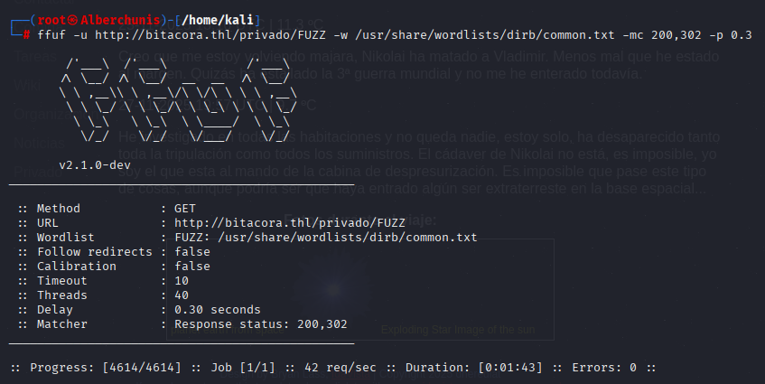
gobuster dir -u http://bitacora.thl -w /usr/share/wordlists/ffuf/SecLists/Discovery/Web-Content/raft-medium-files.txt -x wav -b 400,404,403 --delay 500ms
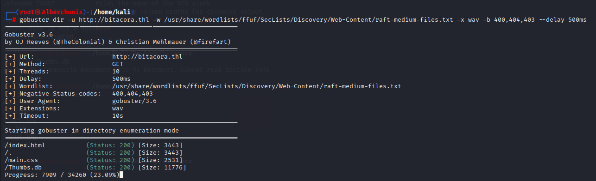
strings -el Thumbs.db
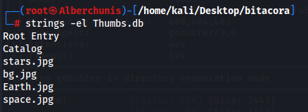
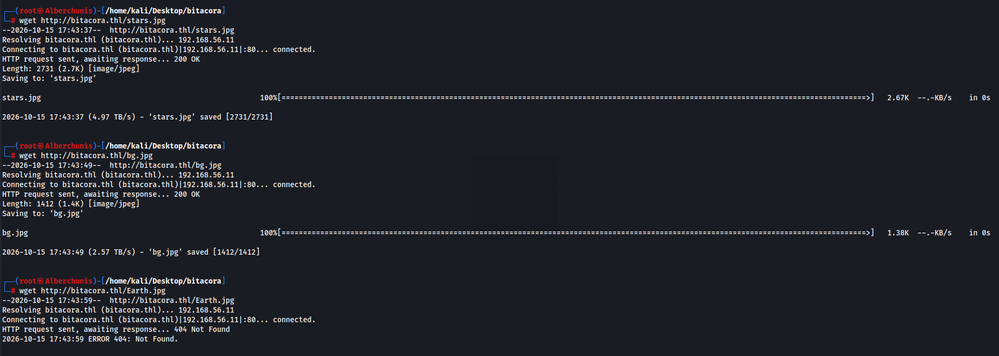
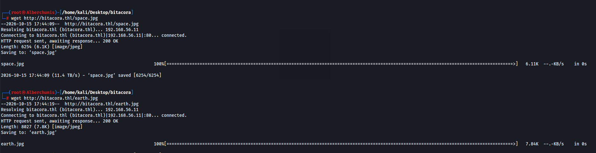
En la maquina tenemos acceso ya que es un OSINT
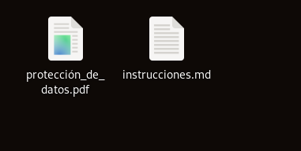
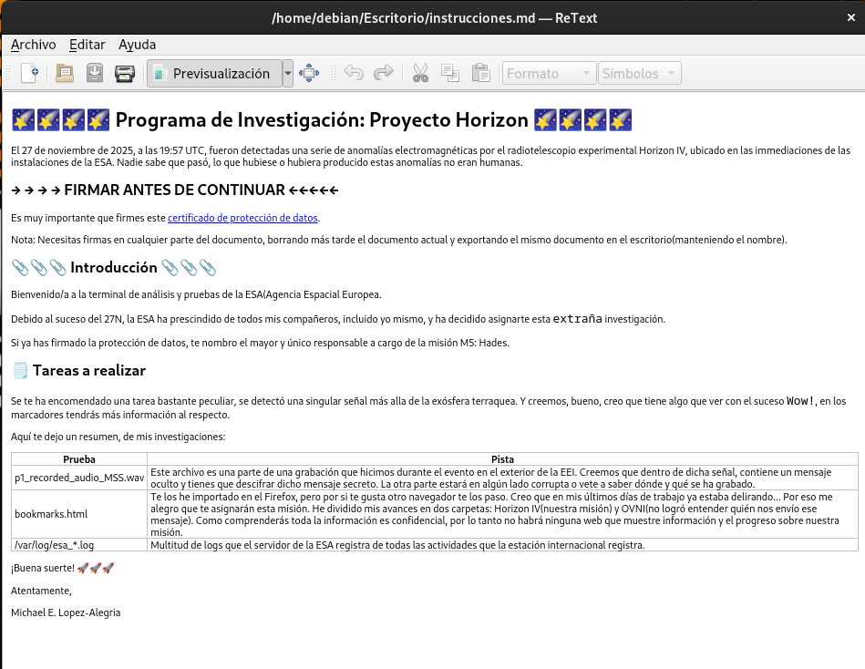
con libre office draw, hacemos firma
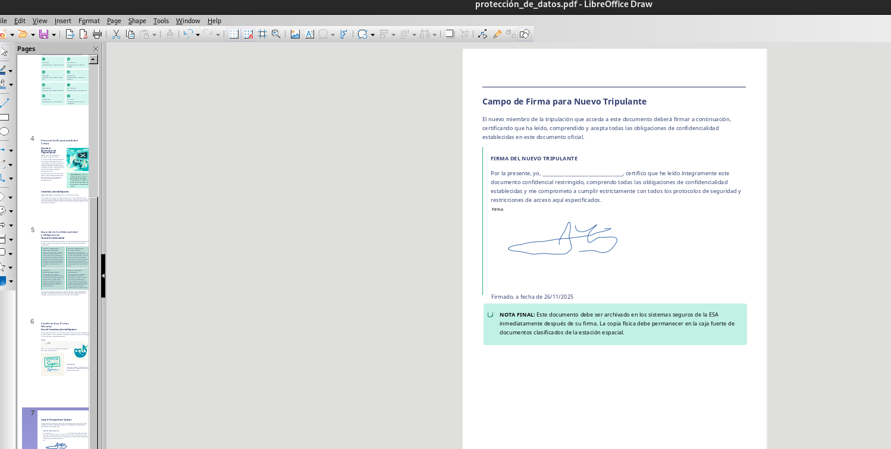
cuando guardemos el archivo en pdf, aparecera una carpeta
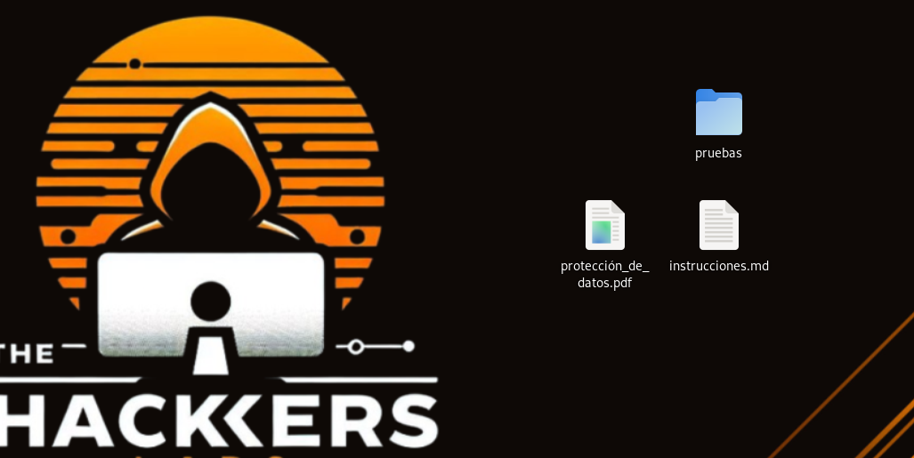
con audacity abrimos el wav
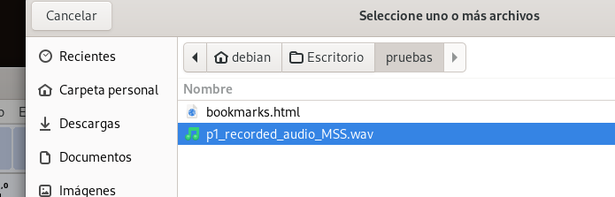
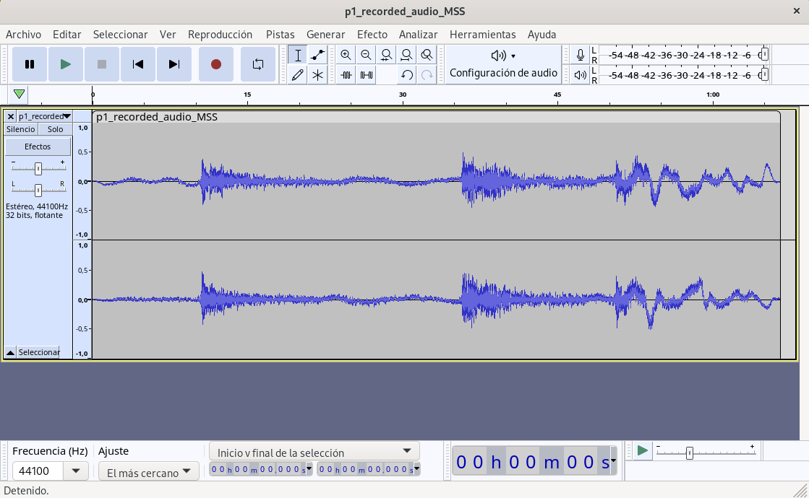
No vemos ningun mensaje oculto en espectograma
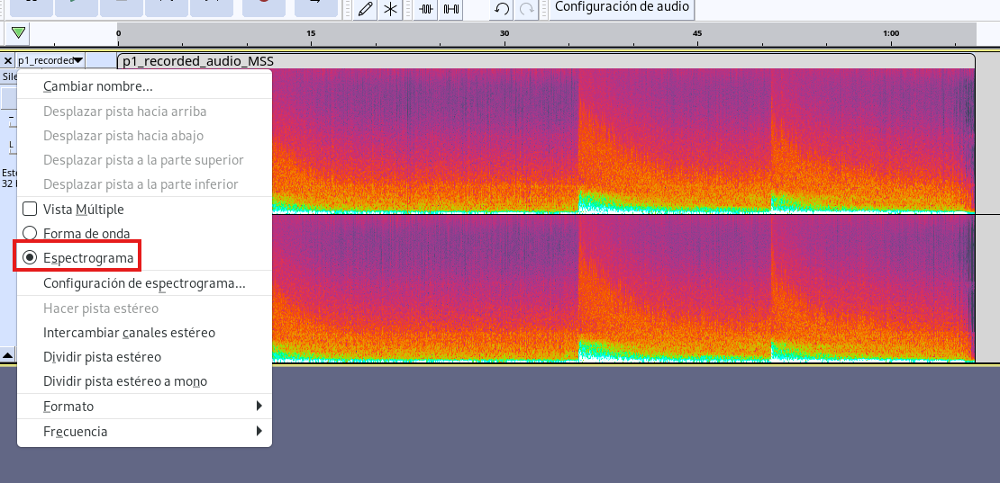
creamos servidor para pasar el wav a kali
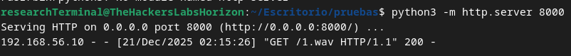
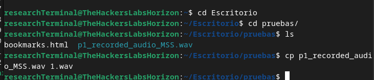
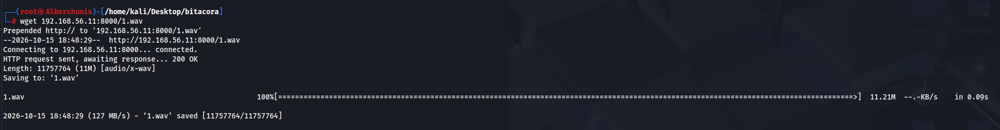
Crackeamos la contraseña, es secret
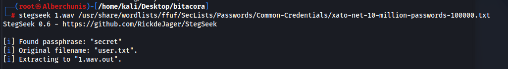
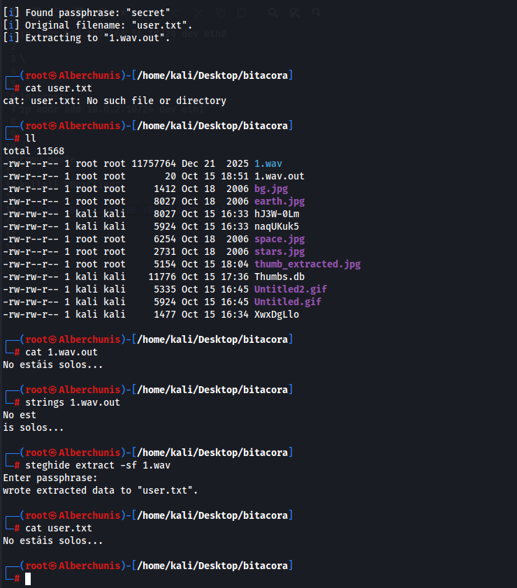
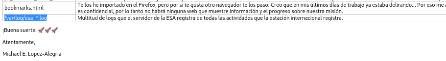
Con OSINT vemos que es real el astronauta, ponemos la fecha de nacimiento que nos pedian
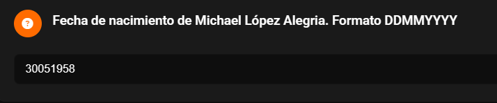
ya que podemos acceder desde el sistema, hacemos bypass a la contraseña que nos pedia
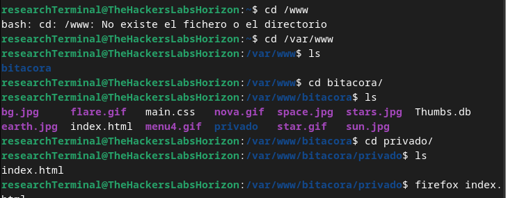
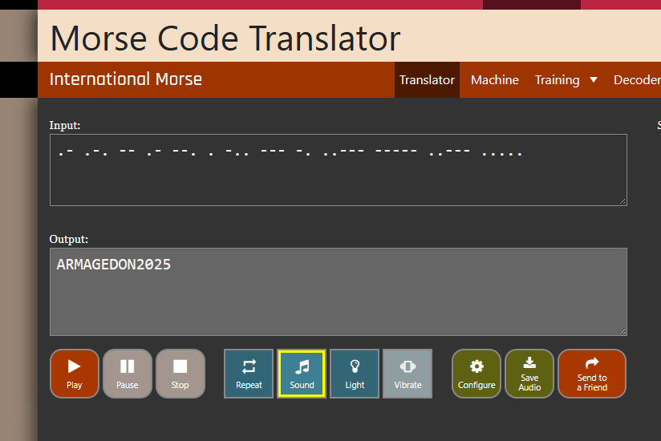
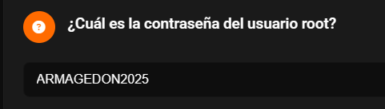
Accedemos por ssh con root
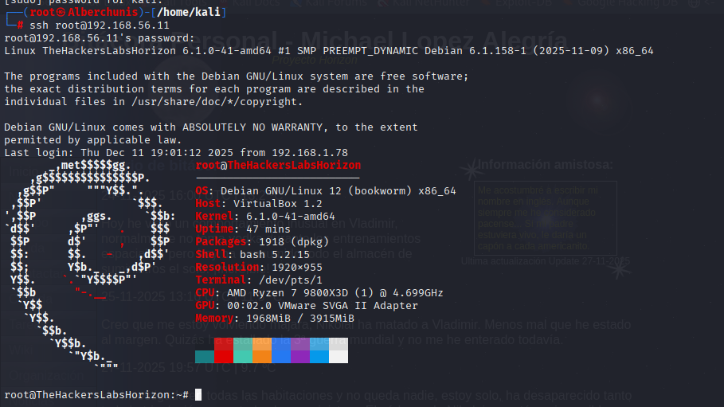
En uno de los logs que nos indicaban, aparece esta linea interesante de /etc/signals
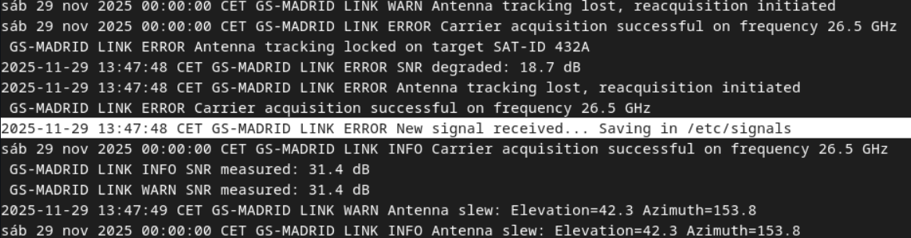
Extraemos el contenido oculto, no tiene contraseña
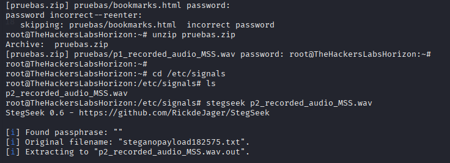
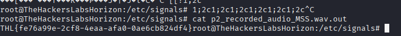